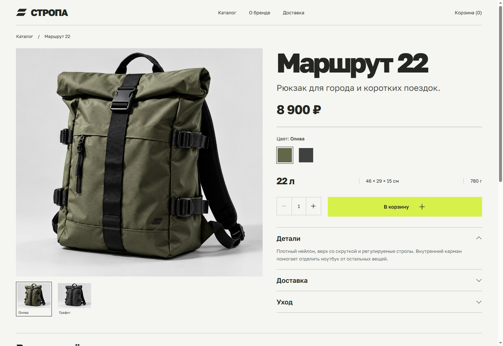
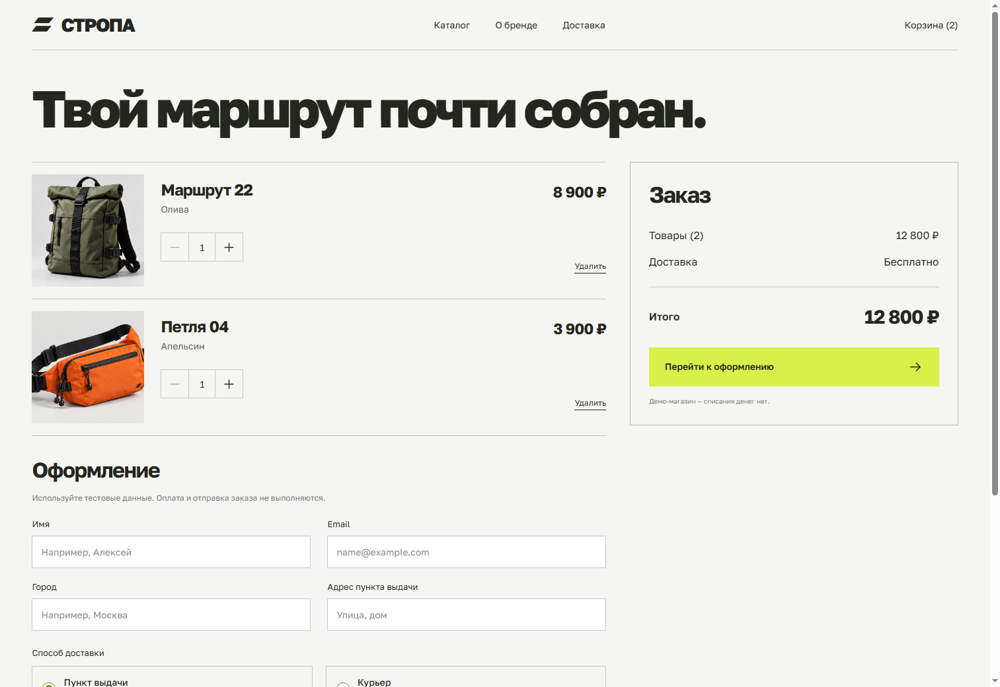
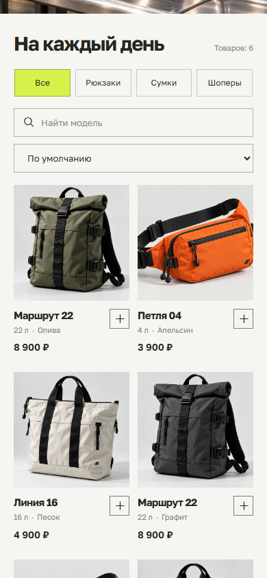
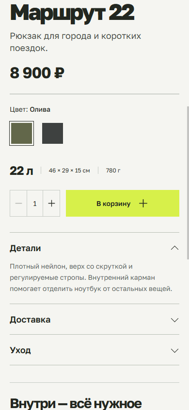

Модельный проект · городские сумки
СТРОПАОт первого взгляда
до собранной корзины.
Интернет-магазин с полным демонстрационным путём покупки: выбрать модель, сравнить цвета, собрать заказ и увидеть итог.
Попробовать магазин ↗
Задача
Выбор без лишних шагов.
По модельному брифу небольшой бренд продаёт три модели городских сумок в двух цветах. Посетителю нужно быстро увидеть ассортимент, понять размер и стоимость, выбрать вариант и перейти к покупке.
На первом экране — продукт и короткое сообщение. Дальше — открытая товарная сетка, поиск, категории и сортировка. В карточке товара цвет меняет изображение и конкретный вариант, который попадёт в корзину.
Сценарий покупки
Один визуальный язык.
Три рабочих экрана.
Три категории, поиск по модели и цвету, сортировка цены. Добавление товара прямо из списка.

Фотография нужного цвета, габариты, объём, количество и короткие раскрывающиеся описания.

Количество, удаление, расчёт доставки и проверка полей. После отправки формы появляется локальное подтверждение демо-заказа.
Адаптация
Тот же магазин.
В одной руке.
На телефоне остаётся двухколоночный каталог. Карточка товара перестраивается вертикально, а корзина показывает итог перед оформлением.
Открыть мобильную версию ↗

Что можно проверить
Полный путь до демо-заказа.
Категории, поиск и сортировка
Выбор цвета с заменой фотографии
Количество и ограничение до 8 единиц
Корзина после перезагрузки
Два способа доставки и пересчёт суммы
Проверка полей и подтверждение заказа
Бренд, товары, характеристики и цены — модельные. Изображения созданы генеративно. Это frontend-демонстрация: сервер, оплата, реальные остатки и отправка заказов не подключены. Корзина хранится в браузере; контактные данные формы туда не записываются.